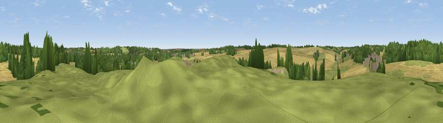

Viewpoint near Little Blakenham
#43375 in England · top 39% of its area beats it · near Little BlakenhamThe view, rendered

A 360° render of this exact spot computed from the terrain model, tree cover and land cover — summer colours, afternoon light, calibrated against photographs of famous viewpoints. Real trees, hedges and buildings will differ in detail.
The panorama
Grey silhouette: terrain skyline in each direction (720 bearings, Earth curvature and refraction included). Dashed green: skyline with trees (+15 m) and buildings (+8 m) as obstacles. Blue strip: how far the ground is visible on each bearing.
Where the view opens
Wedge length = distance to the farthest visible ground on that bearing (vegetation-aware). Rings at 10, 25 and 50 km.
What fills the view
45% cropland · 31% grassland · 19% woodland · 3% built-up · 1% water
Angular shares of the visible panorama (visual magnitude), not map area. Landscape diversity 0.53 (0–1 Shannon).
Key numbers
More beautiful places nearby
The staircase of upgrades: each row has a higher view potential than everything closer. Driving times are estimates from straight-line distance, calibrated against real road routing — check an actual route before setting out.
| Place | Direction | Drive | Score |
|---|---|---|---|
| Viewpoint near Claydon | NE · 1 km | ~3 min | 30.8 |
| Viewpoint near Great Blakenham | N · 2 km | ~5 min | 39.5 |
| Viewpoint near Trimley St Mary | SE · 21 km | ~35 min | 41.0 |
| Criers Wood | SW · 43 km | ~64 min | 45.7 |
| Gun Hill | ENE · 48 km | ~69 min | 46.7 |
| Stamfords Hill | SSW · 54 km | ~76 min | 54.1 |
| Viewpoint near Stapleford | W · 62 km | ~85 min | 54.8 |
| Viewpoint near Hadleigh | SSW · 69 km | ~93 min | 57.4 |
52.09426, 1.08288 · source: screening · position refined by local search. Computed location — check access rights before visiting.